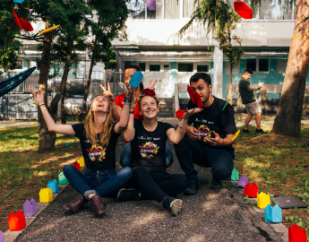

At Home Projects
Survivors Projects
Transformative Justice


If you are looking for ways to help others with the added bonus of keeping yourself and/or your kids busy during this time of social distancing and staying in place, below are some projects that you can work on from home by ordering supplies online and delivering at a later date.
Email Angel Carroll at acarroll@lsja.org for more information regarding quantity, delivery, etc.
Looking to give some pro bono hours for a good cause? The Survivors’ Project is in the process of recruiting additional pro bono attorneys, law students, and experts to represent this vulnerable population in applying for clemency pro bono.
Volunteers will be trained and receive free continuing legal education credit.
LSJA welcomes volunteer groups to assist with Transformative Justice related projects and host fun activities for our emerging adults in Dallas and Williamson County.
For more information or to schedule an activity, please email Angel Carroll at acarroll@lsja.org